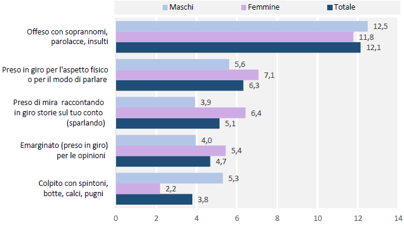

ciao
video
- Con bullismo (in lingua inglese bullying) si indica una forma di comportamento sociale di tipo violento, prevaricatorio e intenzionale, tanto di natura fisica che psicologica, ripetuto nel corso del tempo e attuato nei confronti di persone percepite come più deboli dal soggetto che perpetra uno o più atti in questione.
Il bullismo come fenomeno sociale e deviante è oggetto di studio tra gli esperti delle scienze sociali, della psicologia giuridica, clinica, dell'età evolutiva e di altre discipline affini. Il termine viene usato per descrivere il fenomeno soprattutto in ambito scolastico, sebbene non esista una definizione univoca per gli studiosi. Qualora tali atti siano perpetrati via internet si parla di cyberbullismo.Il cyberbullismo è definito come un atto aggressivo, intenzionale condotto da un individuo o un gruppo usando varie forme di contatto elettronico, ripetuto nel tempo contro una vittima che non può facilmente difendersi. Esso ha però delle caratteristiche identificative proprie: il bullo può mantenere nella rete l’anonimato, ha un pubblico più vasto, ossia il Web, e può controllare le informazioni personali della sua vittima.
La vittima al contrario, può avere delle difficoltà a scollegarsi dall’ambiente informatico, non sempre ha la possibilità di vedere il volto del suo aggressore, e può avere una scarsa conoscenza circa i rischi insiti nella condivisione delle informazioni personali su Internet.
Proprio per queste maggiori difficoltà da parte della vittima, talvolta essa può arrivare a compiere atti davvero tragici. Una recente ricerca ha cercato di studiare meglio il fenomeno del suicidio adolescenziale e se effettivamente l’associazione cyberbullismo – suicidio adolescenziale sia statisticamente significativa quanto si crede. Gli autori dello studio hanno così concluso che il cyberbullismo è un fattore presente in alcuni suicidi, ma quasi sempre ci sono altri fattori come la malattia mentale o la presenza di altre forme di bullismo, come quello faccia a faccia. Il cyberbullismo in genere rientra nel contesto del normale bullismo.
I segnali che possono aiutare un genitore a capire se il proprio figlio è vittima di cyberbullismo sono i seguenti:
– Utilizzo eccessivo di internet.
– Chiudere le finestre aperte del computer quando si entra nella camera.
– Rifiuto ad utilizzare Internet.
– Comportamenti diversi dal solito.
– Frequenti invii attraverso Internet dei compiti svolti.
– Lunghe chiamate telefoniche ed omissione dell’interlocutore.
– Immagini insolite trovate nel computer.
– Disturbi del sonno.
– Disturbi dell’alimentazione.
– Disturbi psicosomatici (mal di pancia, mal di testa, ecc).
– Mancanza di interesse in occasione di eventi sociali che includono altri studenti.
– Chiamate frequenti da scuola per essere riportati a casa.
– Bassa autostima.
– Inspiegabili beni personali guasti, perdita di denaro, perdita di oggetti personali.
Il cyberbullismo non caratterizza solo gli adolescenti, purtroppo anche gli adulti risentono di tale fenomeno, in particolare sul luogo di lavoro. Uno studio, che ha coinvolto ricercatori della University of Sheffield e della Nottingham University, ha evidenziato come su 320 persone che hanno risposto al sondaggio del loro studio, circa otto su dieci aveva vissuto comportamenti di cyberbullismo almeno una volta negli ultimi sei mesi. I risultati hanno anche mostrato che un 14-20 per cento li ha vissuti almeno una volta alla settimana, con un’incidenza simile al bullismo tradizionale.
